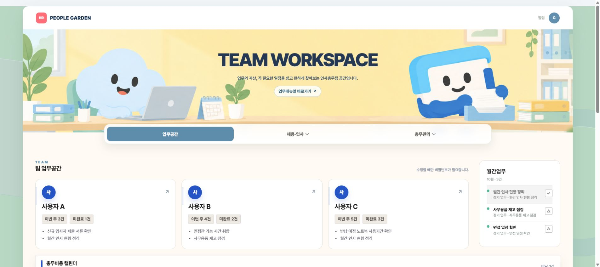
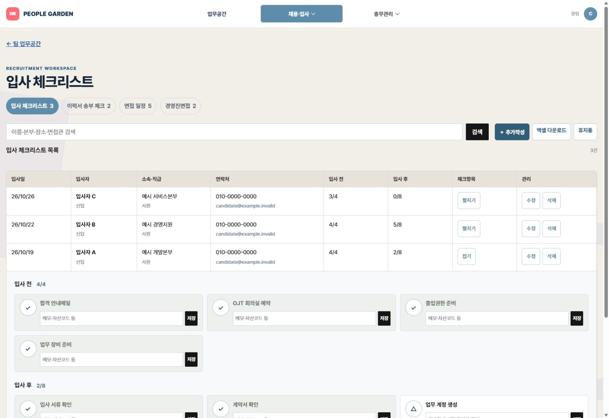
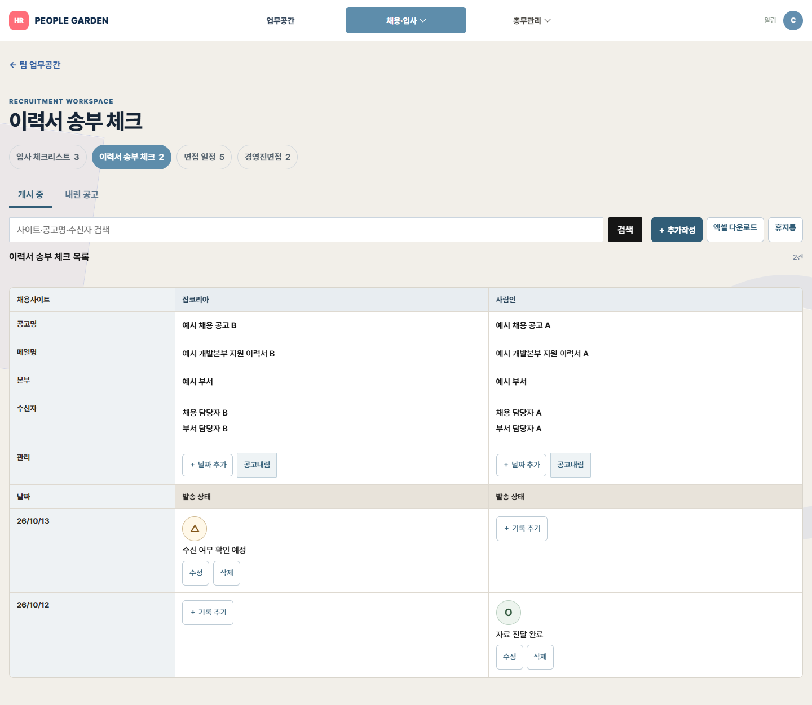
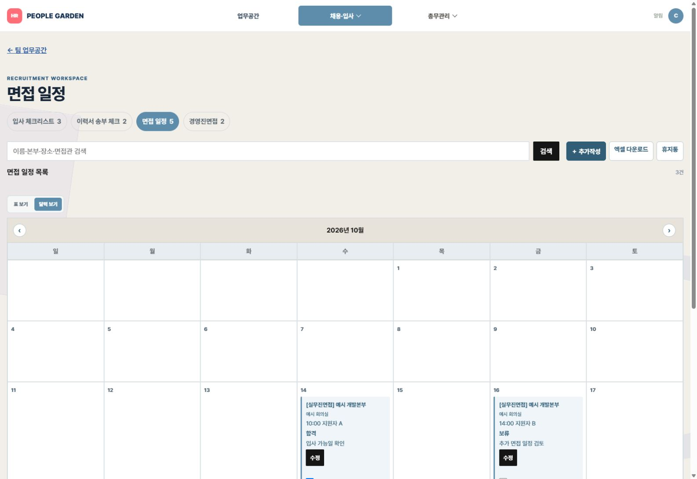
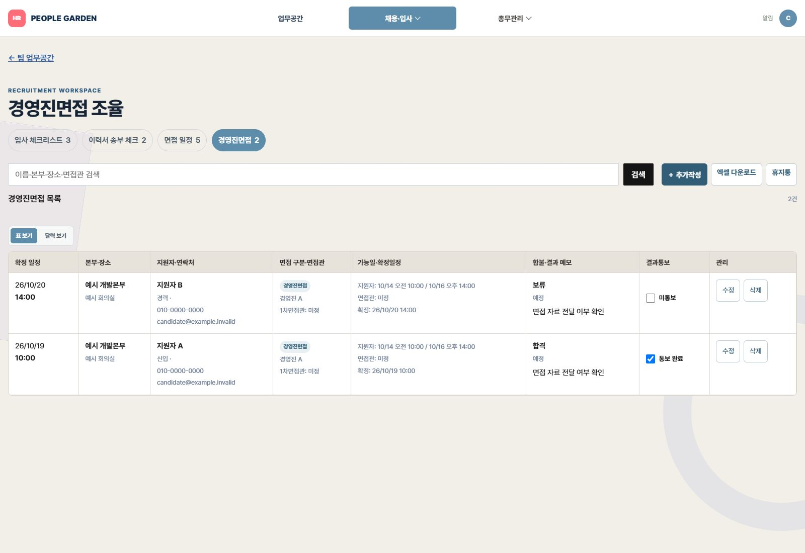
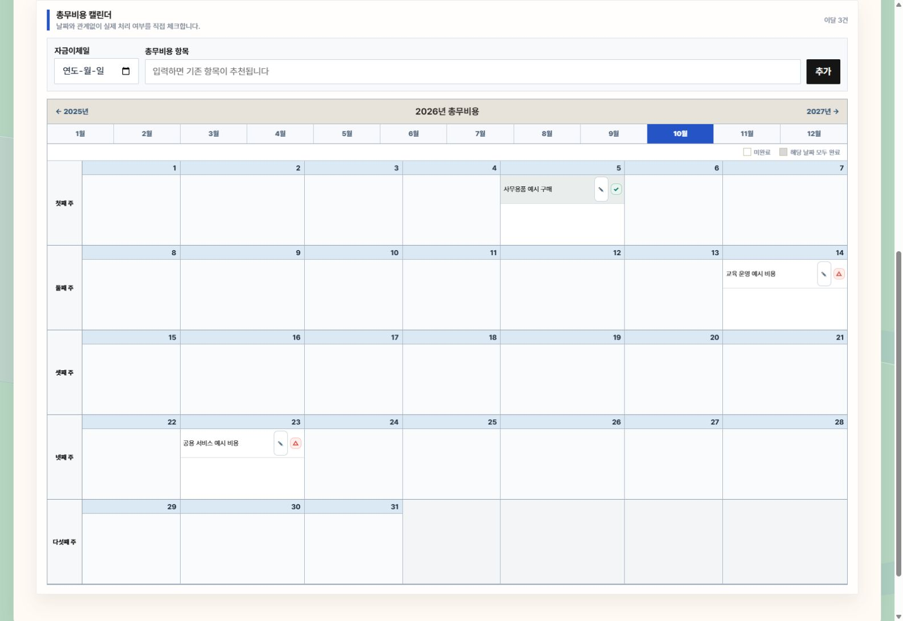
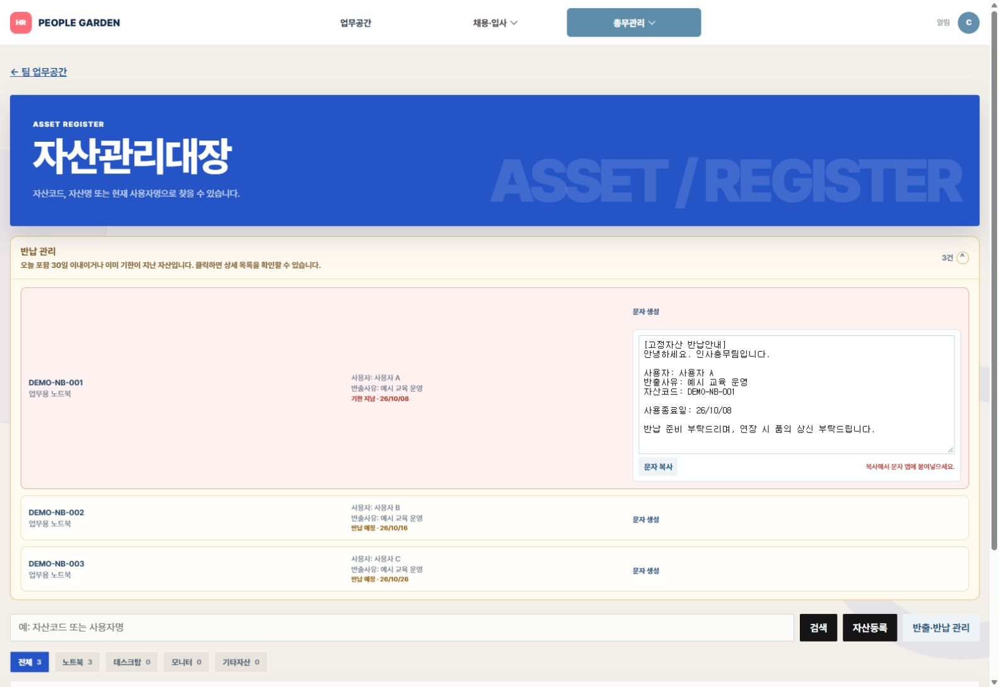
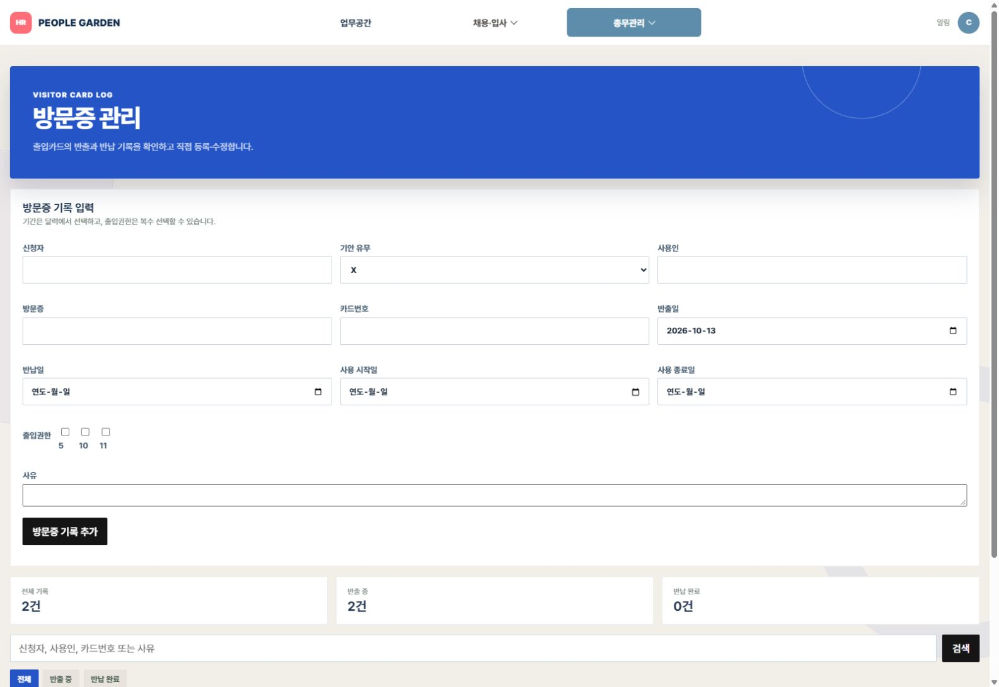
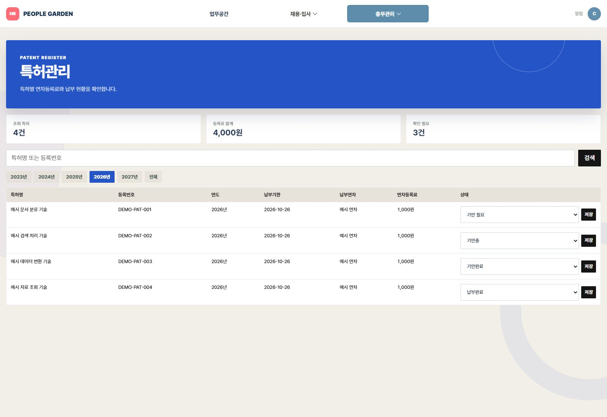
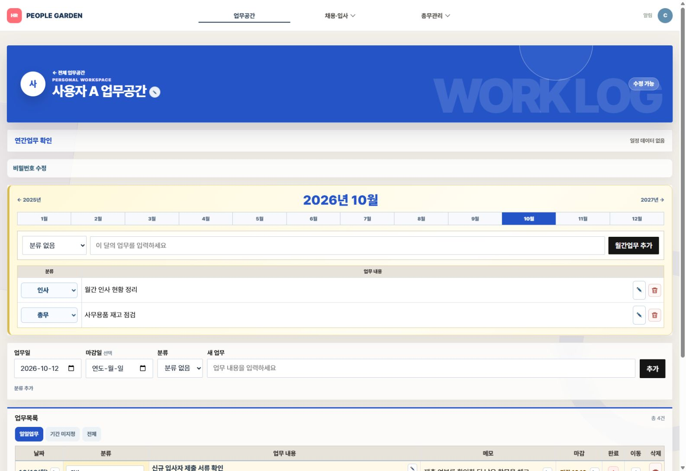

입사자별 준비 항목과 완료 수를 확인합니다.
- 서류·계정·장비 준비를 항목별로 체크
- 완료·검토 필요 표시와 입사자 정보 수정
- 입사일과 진행 상태 확인, 엑셀 다운로드
인사·총무 업무관리 웹앱
업무일지와 면접 일정, 자산 반납을
한곳에서 확인하고 수정합니다.

입력, 확인, 수정까지 업무별로 구성했습니다.
입사자별 준비 항목과 완료 수를 확인합니다.
공고별 이력서 전달 날짜와 확인 상태를 관리합니다.
가능 시간을 모아 일정을 조율합니다.
경영진 일정과 면접 결과를 따로 관리합니다.
월별 비용 일정과 처리 여부를 확인합니다.
대여 이력부터 반납 안내까지 확인합니다.
기간과 출입권한을 선택해 기록합니다.
납부기한과 기안 진행 상태를 확인합니다.
업무일지와 면접 일정, 자산관리대장을 여러 스프레드시트에서 관리하던 방식에서 출발했습니다. 필요한 기록을 찾거나 수정할 때 파일을 오가는 과정을 줄이고자 했습니다.
기존 자료에서 필요한 항목을 골라 메뉴와 입력 화면을 정했습니다. 엑셀 다운로드는 유지하고, 입력과 수정은 업무별 화면에서 처리하도록 구성했습니다.
대분류와 메뉴를 선택해 실제 화면을 확인합니다.
서류 수령, 계정 신청, 장비 지급을 입사자별로 확인합니다. 완료한 항목 수와 남은 항목이 함께 표시되어 후속 업무를 찾기 쉽습니다.

채용사이트는 잡코리아·사람인으로 구분하고, 공고명·메일명·본부·수신자를 항목별 행으로 정리합니다. 날짜별 상태는 아이콘으로 바꾸고 공고마다 날짜를 추가할 수 있습니다. 이메일을 자동 발송하는 기능은 아닙니다.

지원자 연락처 입력과 면접관 가능일 확인을 같은 업무 흐름에 배치했습니다. 확정한 날짜와 시간은 표 또는 달력으로 확인하고, 면접 결과와 메모도 수정합니다.

경영진면접을 별도 메뉴로 구분했습니다. 지원자별 면접 시간과 장소, 진행 상태를 확인하고 결과와 후속 메모를 남깁니다.

연필 아이콘은 비용 항목 수정에, ✓·△는 처리 상태 변경에 사용합니다. 완료 항목은 회색으로 구분하며 월별 일정은 달력에서 확인합니다.

반납 관리 영역을 펼치면 기한이 임박했거나 지난 자산이 표시됩니다. 사용자, 반출사유, 자산코드와 사용종료일이 포함된 안내문을 생성해 복사합니다. 문자는 자동 전송하지 않습니다.

사용기간은 날짜 선택으로 입력하고, 기안 유무는 O/X로 구분합니다. 출입권한은 층별·구역별로 복수 선택할 수 있으며, 등록한 정보도 수정할 수 있습니다.

납부기한과 비용을 한 목록에서 확인하고, 기안 필요·기안중·기안완료·납부완료 중 현재 상태를 선택해 저장합니다.

개인 업무공간에서 마감일과 메모를 기록하고 완료·검토 필요 상태를 구분합니다. 연간업무는 월별로 확인합니다.

포트폴리오 화면은 실제 웹앱을 가상 데이터로 캡처했습니다. 개인정보와 사내 자료는 포함하지 않았으며, 여기서 입력한 값은 업무 시스템에 저장되지 않습니다.
기존 자료를 검토해 필요한 항목과 입력 순서를 정했습니다. 화면을 직접 사용하면서 날짜, 마감, 완료 표시와 수정 방식을 조정했습니다.
코드는 AI 도구와 협업해 작성했습니다. 업무 규칙을 결정하고 구현 결과를 확인하는 역할을 맡았습니다.